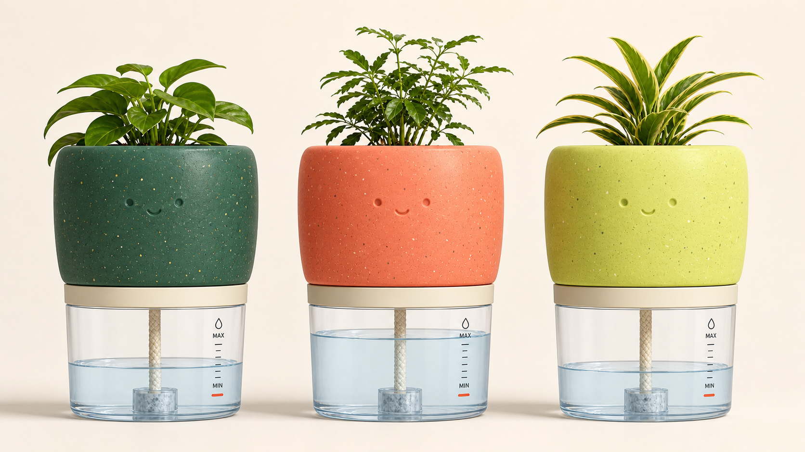

浙才私域销售实习生
累计成交 180 名付费学员，贡献 70 万元以上营收。通过需求追问、产品讲解和异议处理推进成交。

01 / EXPERIENCE
累计成交 180 名付费学员，贡献 70 万元以上营收。通过需求追问、产品讲解和异议处理推进成交。
评估大模型真实问答，归纳典型 Bad Case，并提交可以复核的结构化反馈。
参与职业认知课程的宣传、咨询与销售，招募 6 名学员，创收 1.9K 元。
02 / CARBON GARDEN
再生塑料自浇水花盆，配套植物养护与回收入口。
01 / USER PROBLEM
忘记浇水、不知道浇多少、短期出差无人照看，产品结构围绕这三个问题展开。
02 / PRODUCT
水仓余量、导水方式和拆洗路径放在同一页，路演时可以直接解释产品如何工作。
03 / MINI PROGRAM
从用户问题、产品结构到小程序体验，我完成方案内容、页面逻辑、前端 Demo 与 PPT 材料。
陶氏化学 × 启创空间
数字原型获得积极反馈
负责需求梳理、产品结构表达、小程序与 PPT 材料
03
CASE 02
方案从语音识别障碍扩展到出行端、家属端和治理端。出行者获得实时提醒，家属了解行程，治理人员承接事件处置。


CASE 03
用社交电量灯先表达是否愿意被打扰，再通过 AI 生成破冰话题。我的工作集中在软件侧方案，并与硬件成员完成连接。


04 / CONTACT
南京工业职业技术大学
自动化技术与应用 · 本科
CET-4 577 / CET-6 472